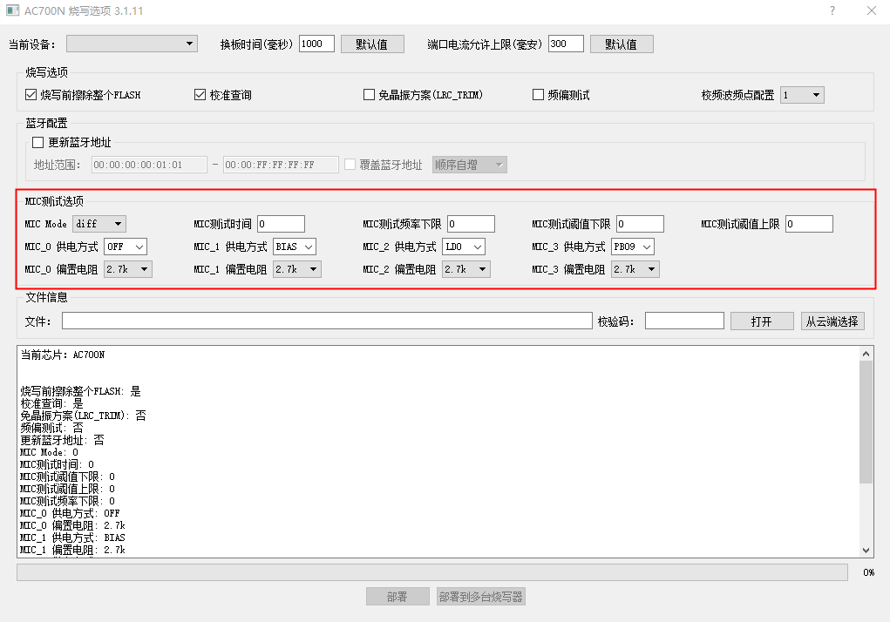
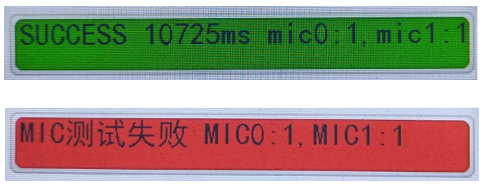

2.16. MIC Test
2.16.1. Use case
Devices with a faulty MIC need to be picked out during production so that the MIC can be replaced or the device circuit repaired. How can devices with a faulty MIC be picked out quickly?
You can use the 1-to-8 programmer to test the MIC on each device while programming the device's chip firmware, and detect devices with a faulty MIC, for example, devices whose MIC picks up no sound.
If the device's MIC is normal, programming passes; if the MIC is faulty, the programmer reports an error.
In this way, devices with a faulty MIC can be picked out and kept from passing on to later production stages, which improves production efficiency.
2.16.2. Test description
Programmer firmware versions and chip models that support the MIC test.
1-to-8 programmer firmware version
Supported chip models
Subject to the options available in the deployment screen
AD697N/AC897N, AD698N, AC700N/JL700N, AC701N/JL701N
AC704N, AC710N
MIC test configuration parameters
To perform the MIC test with the programmer, configure the MIC test items in the programming options of the PC tool screen for updating the FW file, as shown in MIC test option configuration:

MIC test option configuration
MIC test option parameters
MIC test option
Description
MIC mode (MIC 模式)
Three types are available: 1. Differential MIC (差分MIC); 2. Single-ended DC-blocking MIC (单端隔直MIC); 3. Capacitor-less MIC (省电容MIC). Be sure to select the MIC mode type that matches the actual design for testing
MIC test time (MIC 测试时间)
The default is 0, which disables the MIC test
Select 100mS or more; the larger the value, the more stable the MIC test. If programming speed is not a concern, 500~1000ms is recommendedMIC test lower frequency limit (MIC 测试频率下限)
If there is unavoidable low-frequency noise in the environment, set the lower frequency limit according to the noise frequency; frequencies below the set lower limit are filtered out (the lower limit must be lower than the frequency of the sine wave played during the test);
Lower frequency limit (range: 0-20000)MIC test upper threshold (MIC 测试阈值上限)
MIC test lower threshold (MIC 测试阈值下限)Take several known-good devices, play a continuous sine wave (for example, a 1kHz sine wave) with an audio source in the test environment, and observe the range of MIC energy values captured by each device;
based on the maximum and minimum of this range, leave an appropriate margin to set the upper and lower energy thresholds;
Upper energy threshold/lower energy threshold (range: 0-32767)
If a device's energy value is outside the upper and lower limits during the programming test, the device is considered to have an abnormal MICMIC_x power supply mode (MIC_x 供电方式)
Set the power supply mode of each MIC under test according to the actual hardware:
1. Select 'OFF': the test of this MIC channel is disabled (default);
2. Select 'BIAS': power is supplied from the pin defined by the chip; MIC0 uses pin PA02 and MIC1 uses pin PB07 (depending on the chip model);
3. Select LDO power supply: the bias is provided by micldo;
4. Select IO power supply and enter the IO pin manually, e.g. PA02, PA15 or PB09 (note: you must enter 4 characters; for example, enter PA02, not PA2)MIC_x bias resistor (MIC_x 偏置电阻)
Select the resistance required by the MIC under test, i.e. set the value of the chip's internal MIC bias resistor
Characteristics of a MIC with no sound
If the MIC component has a cold solder joint or a short circuit, no sound is captured, so the values sampled by the ADC do not change and the output energy value is 0;
If the MIC is faulty and captures no sound or only very faint sound, the amplitude of the output voltage signal is very small, and the output energy value is much smaller than normal.
2.16.3. Test procedure
Find suitable upper and lower MIC test thresholds
When updating the fw programming file, configure the MIC test options following the MIC parameter configuration description (up to 4 MICs can be tested at the same time, but only some chips support 4),
setting the lower MIC test threshold to 0 and the upper threshold to 1000 to start with; set the other parameters according to your actual application. After configuring the parameters, deploy the fw programming file and the programming options to the programmerSelect programming mode or verification mode and run the programming or verification process on the device chips. After programming or verification completes, the display of the 1-to-8 programmer shows the energy value of the MIC0 or MIC1 under test, whether the result is a pass or a fail;
as shown in MIC test energy value display:

MIC test energy value display
Progress bar color
Meaning
MIC0 energy value
MIC1 energy value
Green
Test passed
1
1
Red
Test failed
1
1
Note
The energy values in the two cases here are the same, but the results differ because different upper and lower MIC test thresholds were set in the two cases
Test several known-good devices, record the energy value of each one, and determine suitable upper and lower MIC test thresholds
Update the fw programming file again with suitable upper and lower MIC test thresholds; you can then start batch programming with MIC testing
2.16.4. Notes
Be sure to find suitable upper and lower MIC test thresholds first, and start batch programming and testing only after they have been configured
Parts of the captured MIC data below the lower frequency limit are filtered out (for example, low-frequency interference in the environment)